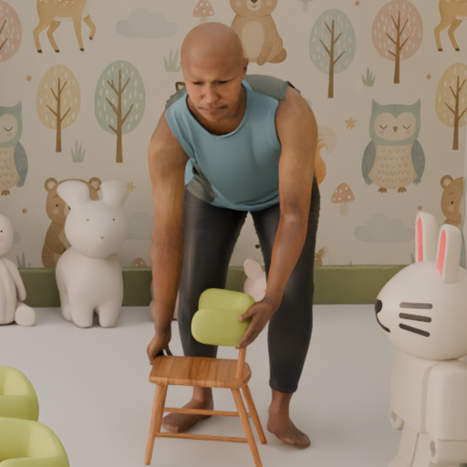
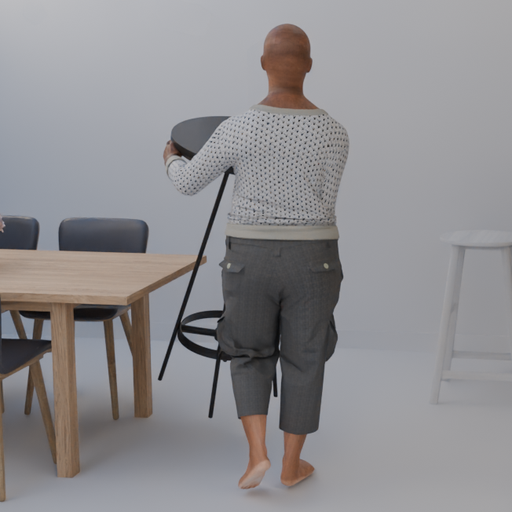
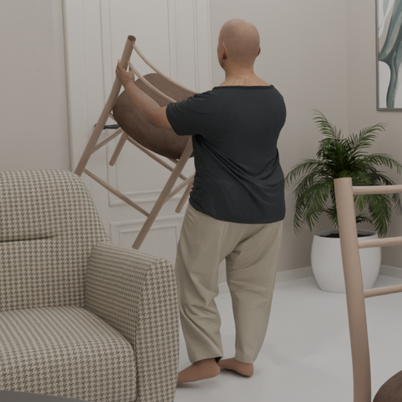
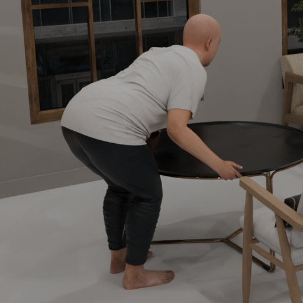
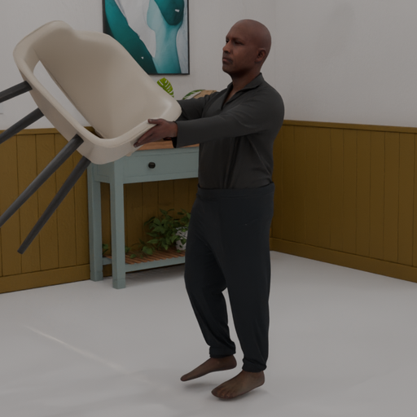

Point tracking
Roughly twenty thousand 3D-consistent point tracks per sequence, stratified across body, clothing, carried objects, and the surrounding scene. Visibility and frustum information is provided for each camera.
22 hours · 2.3M frames × 6 cameras = 13.8M views · exocentric and egocentric cameras · dense ground truth across seven modalities · MHR body parameters and 3D OBBs
Positioning
| Type | Frames | Cameras | Ego + Exo | HOI | Multi-actor | Sim. cloth | Dense flow | Point tracks | Dense depth | 3D body + obj poses | |
|---|---|---|---|---|---|---|---|---|---|---|---|
| Spring | Sim | 6K | 2 | – | ✓ | ✓ | ✓ | ✓ | – | ✓ | – |
| Hypersim | Sim | 77K | 1 | – | – | – | – | – | – | ✓ | Obj only |
| PointOdyssey | Sim | 208K | 1 | – | – | ✓ | – | – | ✓ | ✓ | Body only |
| Kubric (MOVi) | Sim | 1.2M | 1 | – | – | – | – | ✓ | ✓ | ✓ | Obj only |
| BEDLAM 2.0 | Sim | 8M | 1 | – | – | ✓ | ✓ | – | – | Partial | Body only |
| NymeriaPlus | Real | >30M | Multi | ✓ | ✓ | ✓ | Real | – | – | – | MHR + OBB |
| Ego-Exo4D | Real | >100M | 5–6 | ✓ | ✓ | ✓ | Real | – | – | – | Body only |
| Schlepp | Sim | 2.3M | 6 | ✓ | ✓ | ✓ | ✓ | Fwd + Bwd | ~20K / seq | ✓ | MHR + OBB |
Tour the data
We provide annotations for every pixel of every frame of every camera.
8-bit colour, full sensor resolution, 30 fps. Co-registered with depth, flow, segmentation, and point tracks at every frame.
Downstream Tasks
Roughly twenty thousand 3D-consistent point tracks per sequence, stratified across body, clothing, carried objects, and the surrounding scene. Visibility and frustum information is provided for each camera.
Forward and backward dense flow at full sensor resolution for every frame. Co-registered depth allows for principled occlusion handling and validity masking during evaluation.
Oriented 3D bounding boxes and category labels for every object in the scene, including those being carried. Boxes are animated in world coordinates and projected consistently into all six cameras.
Synchronised exocentric and egocentric trajectories of the same scene, with metric scale and the complete intrinsic and extrinsic calibration for each camera.
Metric depth in furnished indoor environments featuring genuine human-object interaction. Invalid pixels are explicitly marked so that training and evaluation can ignore them.
Per-frame MHR parameters for every actor in the scene. A bundled utility converts these parameters into 3D joint locations via pymomentum forward kinematics.
How it was built
We distil a video model's knowledge about human-object interaction into a motion pipeline. The result: contacts and grasps look plausible across a wide range of carriable objects.
Trained annotators viewed every pickup → carry → place sequence to ensure high-quality motion and realistic object interactions.
Every actor wears physically simulated garments and shows fabric motion under real body dynamics. Skin textures, body shapes, and clothing combinations are drawn from a diverse pool.









Cameras & coordinates
| Name | Resolution | Distortion |
|---|---|---|
static | 1920 × 1080 | pinhole |
body_follow | 1920 × 1080 | pinhole |
object_orbit | 1920 × 1080 | pinhole |
aria_slamL | 512 × 512 | KB4 |
aria_slamR | 512 × 512 | KB4 |
aria_rgb | 2016 × 1512 | KB4 |
cam_T_world (4 × 4 SE(3)).cv::fisheye / OPENCV_FISHEYE compatible.[x, y, z, w].Get the data
hf download facebook/schlepp \
--repo-type dataset \
--local-dir /data/schlepp \
--include "*_ariargb_rgb.tar" \
"*_pointtracks.tar" \
"*_metadata.tar" \
"*.parquet"
git clone https://github.com/facebookresearch/schlepp.git
pip install -e schlepp
cd schlepp && python -m scripts.unpack_chunks /data/schlepp
Only download the cameras and modalities you need.
Chunks are stratified by carried-object category, so a partial
download is still representative. Always include
*_metadata.tar and *.parquet.
Then, pull the code and install the dependencies. To interface
with the dataset, you'll need to unpack the chunks first.
from torch.utils.data import DataLoader
from schlepp import SchleppDataset
from schlepp.utils import resize_sample, subsample_tracks
def to_point_tracker(sample):
sample = resize_sample(sample, short_side=384)
pt = subsample_tracks(
sample["point_tracks"], 512, mode="stratified",
)
cam = sample["cameras"]["body_follow"]
return (
cam["rgb"].permute(0, 2, 3, 1), # (S, H, W, 3)
pt["trajs_2d_pix"]["body_follow"], # (S, 512, 2)
pt["visible"]["body_follow"], # (S, 512)
)
ds = SchleppDataset(
"/data/schlepp",
modalities=["rgb", "point_tracks"],
cameras="body_follow",
seq_len=24,
transform=to_point_tracker,
)
loader = DataLoader(ds, batch_size=4, num_workers=8)
for rgbs, trajs, visibs in loader:
... # train your point tracker
We provide a batteries-included Dataset, which is
straight-forward to add to your training loop.
See the README for full recipes for flow, depth, pose, MHR, and
OBB tasks, plus the bundled evaluation and visualisation tools.